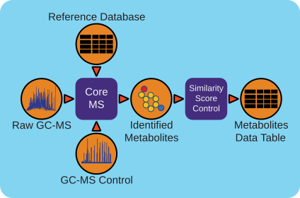

Workflow Overview -------
The gas chromatography-mass spectrometry (GC-MS) based metabolomics workflow (metaMS) has been developed by leveraging PNNL's CoreMS software framework. The current software design allows for the orchestration of the metabolite characterization pipeline, i.e., signal noise reduction, m/z based Chromatogram Peak Deconvolution, abundance threshold calculation, peak picking, spectral similarity calculation and molecular search, similarity score calculation, and confidence filtering, all in a single step.
The workflow is available in GitHub: https://github.com/microbiomedata/metaMS
The container is available at Docker Hub (microbiomedata/metaMS): https://hub.docker.com/r/microbiomedata/metams
The python package is available on PyPi: https://pypi.org/project/metaMS/
The databases are available by request. Please contact NMDC (support@microbiomedata.org) for access.
Docker Container Runtime
or
Python Environment >= 3.10
Python Dependencies are listed on requirements.txt
Execution Details ~~~~~~~~~~~~~~~~
Please refer to:
https://github.com/microbiomedata/metaMS#metams-installation
GCMS_LIBRARY_PATH for GCMS compound MSP libraryFAMES_LIBRARY_PATH for FAMES calibration MSP
libraryPackage maintainer: Yuri E. Corilo <corilo@pnnl.gov>